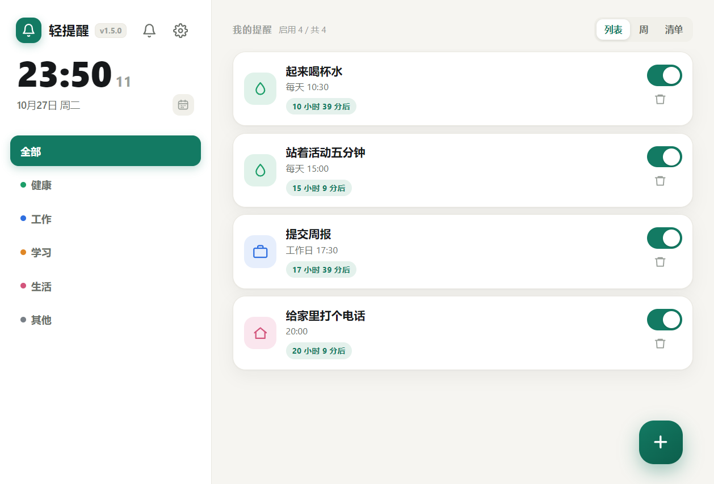
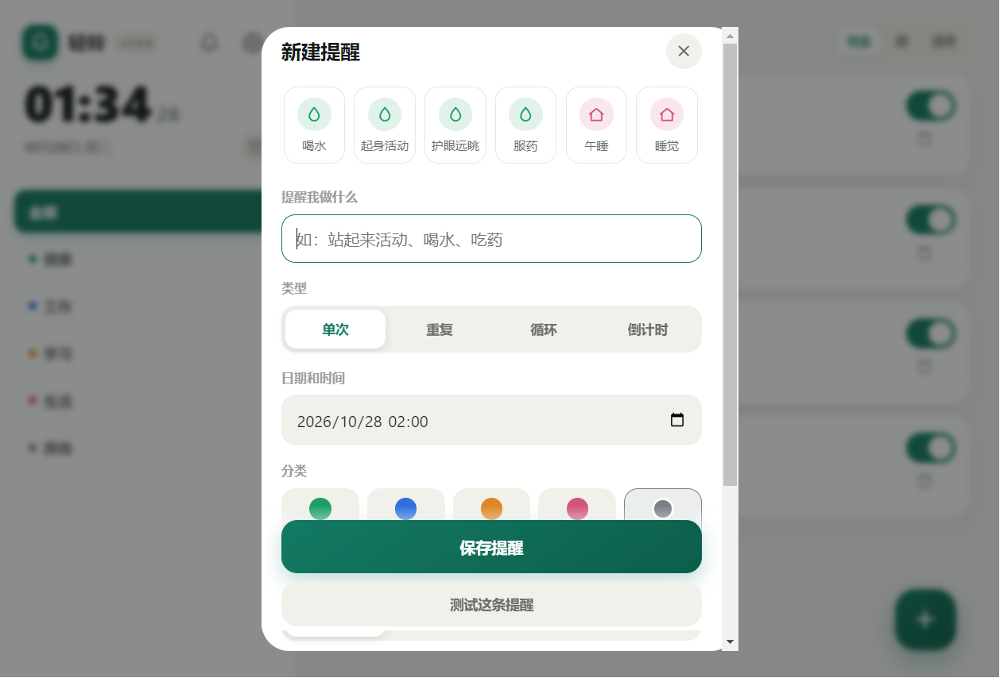
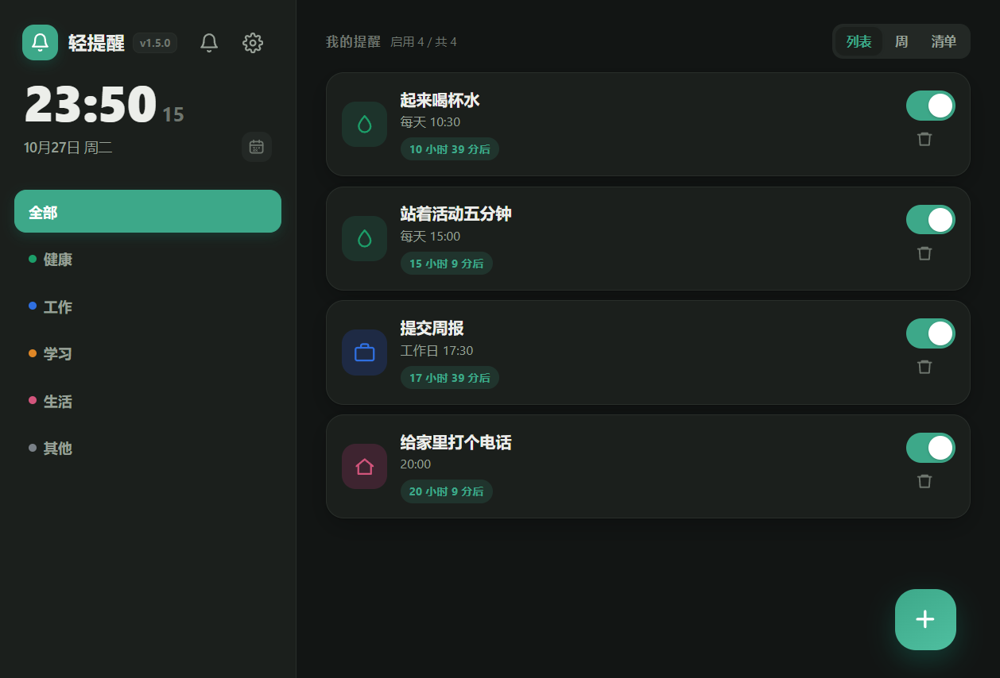

轻铃是一款完全离线的 Windows 提醒工具。提醒直接弹在屏幕上，关掉窗口它还在后台守着。不注册、不联网、没有广告。
点按钮直接下载官方安装包（GitHub 直链，约 77 MB）。想先看改了什么，或者要免安装的绿色版，去 发行版页面。



独立小窗盖在最上层，位置可选中央或四个角。全屏看视频、玩游戏时也照样冒出来。
每天、工作日、每周自选星期、每隔 N 天、每月某日；也能在某个时段里每 45 分钟提醒一次。
列表看全部，周视图看分布，待办清单可以逐条勾掉，还能导出 .ics 到手机日历。
每天自动备份，保留 30 天；支持 JSON 导入导出。空数据永远不会覆盖历史备份。
夜间免打扰、全部暂停；托盘常驻不占任务栏，开机自启也是静静待在托盘。
浅色、深色、跟随系统；还能给主界面和提醒弹窗各选一张背景图，深色下自动加深遮罩保证看得清。
下载 QingLing-Setup-1.6.0.exe 双击安装，向导里可以自己选装到哪，不需要管理员权限。
也有免安装的绿色版压缩包，解压后双击 轻铃.exe 就能用，数据写在程序目录里。
系统要求：Windows 10（1809 及以上）或 Windows 11，64 位。
安装包没有做代码签名，首次运行可能出现 SmartScreen 提示，点「更多信息 → 仍要运行」即可。